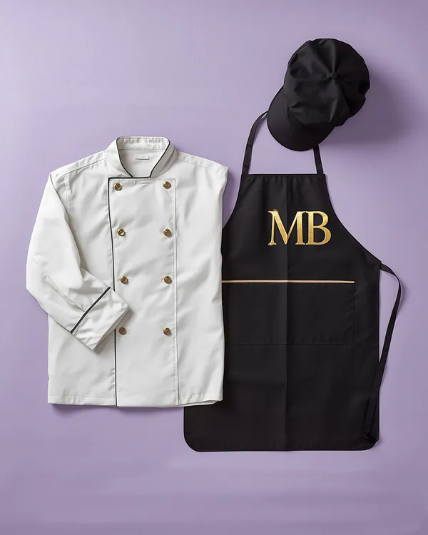
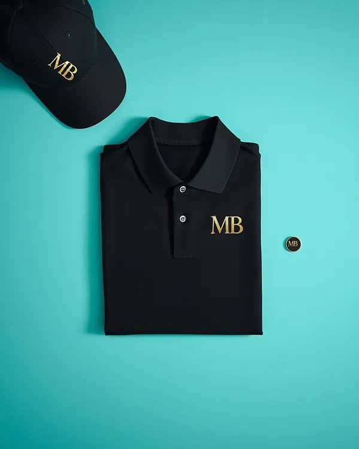
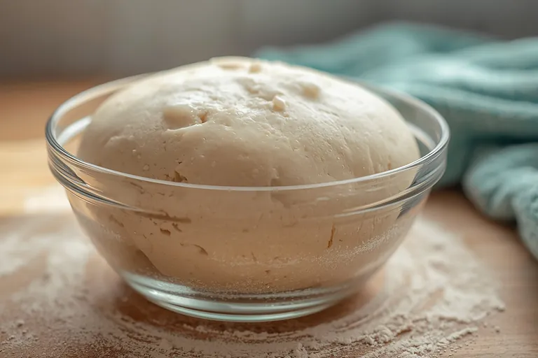
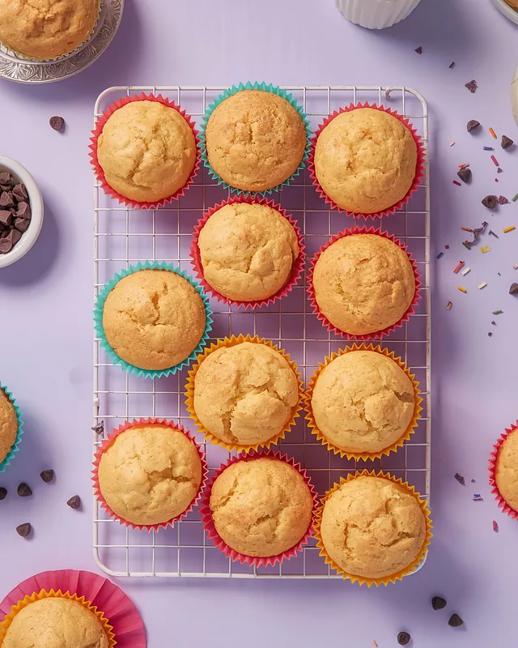

Momentos que Brillan es el proyecto de egreso de Gabriela Tajes y Leonardo Campot. Acá están el estudio, los números y las decisiones detrás del catering para fiestas infantiles de Agraciada.
Inversión inicial$278.000Equipamiento, insumos, limpieza y el primer alquiler
Eventos proyectados36En el primer año, de 2 a 4 por mes
Resultado anual proyectado$505.056Ingresos menos egresos del año
Recupero de la inversión7 mesesEn julio, según el presupuesto
Resumen
El propósito de este proyecto es brindar un servicio de catering dirigido a las familias que deseen realizar un evento y encontrar en un mismo lugar todas las soluciones necesarias para su organización.
Se realizó un estudio de mercado con el objetivo de evaluar la viabilidad del emprendimiento. Los datos recabados indican que, en general, el público no cuenta con un acceso integral a los servicios necesarios para llevar adelante un evento.
En conclusión, el proyecto es viable tanto desde el punto de vista económico como desde el organizativo, ya que permite ofrecer un menú accesible y un servicio de catering atractivo para los usuarios, que satisface sus necesidades y expectativas.
The purpose of this project is to provide a catering service for families who wish to hold an event and find every solution needed to organize it in one place.
A market study was carried out to evaluate the viability of the project. The data collected show that, in general, the public does not have comprehensive access to the services needed to put on an event.
In conclusion, the project is viable from both an economic and an organizational point of view, since it makes it possible to offer an affordable menu and a catering service that is attractive to clients and meets their needs and expectations.
Introducción y fundamentación
Momentos que Brillan es una empresa creada para ofrecer servicios de catering para eventos infantiles en el pueblo de Agraciada. Cada evento se trabaja con compromiso y con distintas opciones culinarias aprendidas en el curso de Gastronomía, adaptadas a las necesidades y preferencias de cada cliente. Además, la empresa hace de nexo con servicios tercerizados para la animación.
El emprendimiento nace ante la falta de esta opción en Agraciada. Pone el foco en los detalles que hacen la diferencia, como la variedad de opciones en un menú saludable, y agrega valor al simplificar una tarea compleja: organizar un evento infantil cuidando todos los detalles. Los precios se adaptan a cada tipo de servicio e incluyen menús de elaboración propia, bebidas y menaje, detallados en una carta de menús.
Objetivo general
Brindar un servicio en el que el cliente encuentre reunido todo lo necesario para hacer un evento infantil, sin tener que trasladarse a otra ciudad ni buscar soluciones en otros lugares.
Marco teórico
Un servicio de catering es un negocio que diseña, prepara y sirve comidas y bebidas fuera de un restaurante, y entrega los alimentos directamente en el lugar del evento. Abarca tres áreas:
El menú
Se diseña y se prepara la comida.
La logística
Se transportan los alimentos.
El servicio
Se monta el evento, se sirve a los invitados y se limpia al terminar.
Estos servicios dan comodidad porque se encargan de la planificación, la preparación, el montaje y la higiene de los alimentos, y así los anfitriones disfrutan plenamente de su evento. Además ofrecen menús adaptables, opciones para dietas especiales, y pueden incluir vajilla, camareros y decoración.
Antecedentes
Antes de 1974
Ya existían banquetes y servicios de comida para fiestas, hoteles y cafeterías, pero no eran empresas dedicadas a llevar la gastronomía a cualquier lugar: cada persona debía ir a buscar los productos a un punto determinado.
1974
Nora Rey realiza su primer servicio y poco después funda Traiteur en Montevideo, una de las empresas pioneras del catering profesional en Uruguay.
Hoy, en Agraciada
Por la poca población del pueblo, lo más parecido a un servicio de catering es el emprendimiento de Natalia De Vega, a quien entrevistamos para conocer el rubro desde adentro.
Lo que aprendimos de la entrevista
Natalia De Vega es la propietaria del emprendimiento Sancocho, en Agraciada. No hizo cursos de cocina: lleva a la práctica recetas de su abuela y de su mamá, y las va modificando. Estas son las ideas que más nos sirvieron.
Mis primeros clientes los conseguí con un pizarrón que puse en la calle, con el olor a la comida y con el boca a boca.
La difusión puede empezar simple y barata.
El que está cocinando tiene que estar cocinando y nada más que eso.
Separar la atención al cliente de la producción.
Tengo un poquito de paciencia y espero a que se estabilice, y ahí, si no me queda otra, subo el precio.
Llevar el control de los costos mes a mes.
Siempre pienso mucho antes si lo voy a comprar, averiguo si da resultado.
Invertir solo en lo que se va a usar.
Leer la entrevista completa
¿Quién te enseñó o dónde adquiriste tu conocimiento sobre este negocio?
No tengo cursos de cocina, simplemente son las recetas de mi abuela y las de mi mamá, y algunas cosas que fui modificando o medio improvisando, inventando.
¿Qué plato te deja más ganancia?
Yo no soy muy ordenada para llevar cuentas, pero me parece que una de las cosas que deja más ganancia son las pastas caseras.
¿Qué insumo te sube todos los meses y cómo lo manejás?
Que suba todos los meses me parece que no. Lo que sí, por ejemplo, la carne estuvo subiendo bastante, o a veces el gas o las verduras, que suben y bajan de precio. Tengo un poquito de paciencia y espero a que se estabilice, y ahí, si no me queda otra, subo el precio. Si no, trato de aguantarme, porque a veces si algo no me da ganancia, con la venta de otra cosa se compensa.
¿Qué plato sacaste del menú porque no era rentable?
Me parece que no he sacado. Lo que sí, a veces hay cosas que se dejan de vender, no sé si porque la gente se aburre, entonces invento otra cosa o pruebo con otra y voy viendo. También varía la clientela: de la estación de Ancap a los almacenes la gente es diferente y se venden cosas distintas, entonces le voy buscando la vuelta.
¿Cómo conseguiste tus primeros clientes?
Con un pizarrón que puse en la calle, con el olor a la comida y con el boca a boca: los mismos clientes le comentaban a otro que yo vendía comida, se iba corriendo la voz y venía gente nueva.
¿Qué consejo te dieron que no te sirvió? ¿Y cuál sí?
Uno que no me haya servido no recuerdo. Uno que sí: no dar fiado. Pero lo que aplico es no negarle a nadie que se lleve algo, porque siempre tuve la suerte de que vienen a pagar.
Si tuvieras que arrancar de cero mañana, ¿qué no harías?
No me quedó otra que hacerlo cuando arranqué, pero es la combinación de atender al público y estar cocinando: o no atendés bien a la persona porque está apurada, o se te quema algo. El que está cocinando tiene que estar cocinando y nada más que eso.
¿Qué herramienta o máquina compraste y no usás nunca?
El lavavajillas. Te sirve cuando tenés muchas cosas juntas, y acá vamos cocinando, lavando y volviendo a usar lo mismo. Con otras cosas no me pasó: siempre pienso mucho antes si lo voy a comprar, averiguo si da resultado.
Identidad de marca
El logo usa las iniciales MB, de Momentos que Brillan. La combinación de dorado y negro transmite lujo, confianza y distinción, y hace que sea llamativo y fácil de recordar.
DoradoÉxito, calidad, prestigio y exclusividad.
NegroContraste, elegancia, sofisticación y profesionalismo.
DestellosRefuerzan la idea de los momentos que brillan.
Uniforme corporativo
Pensado para reflejar profesionalismo, elegancia, higiene y comodidad en cada servicio, mantiene el negro y el dorado de la marca.

Para cocinar
Chaqueta blanca con botones dorados
Pantalón negro cómodo
Delantal negro con cinta dorada y el logo MB estampado en dorado
Gorro negro
Calzado cómodo y antideslizante

Para los eventos
Chomba negra con el logo MB
Pantalón negro cómodo, en tela Panamá
Prendedor con las iniciales MB en dorado
Calzado negro, cerrado y antideslizante
Gorro negro con el logo
Organización
Somos dos personas a cargo de todo, así que cada área tiene responsables claros.
Dirección general
Gabriela Tajes y Leonardo Campot
Alimentos y bebidas
Producción
Gabriela y Leonardo elaboran los productos y dan el servicio.
Comercialización
Leonardo atiende a los interesados y les ofrece menús y servicios.
Administración y finanzas
Leonardo administra las finanzas y Gabriela se encarga de las compras.
Mantenimiento
Entre los dos, la limpieza y el mantenimiento del local.
Marketing
Gabriela hace la difusión en redes sociales.
Tipo de empresa
Elegimos una sociedad de hecho combinada con una pequeña empresa de literal E: la fusión ideal para emprender con baja inversión inicial y empezar a trabajar rápido.
Permite iniciar actividades en apenas 48 horas, sin escribanos ni contratos formales.
No hay que esperar la aprobación de estatutos: el negocio lo inscribe directamente el contribuyente.
Los costos de inscripción son menores que los de una S.A. o una S.R.L.
Los socios se organizan, delegan tareas y reparten la ganancia según acuerdos internos. Si no definen porcentajes, la ley presume partes iguales.
A tener en cuenta: los socios asumen responsabilidad ilimitada, es decir, responden con sus bienes personales.
Análisis FODA
El FODA nació en la década de 1960 en el Instituto de Investigación de Stanford. Separa los factores internos, que la empresa puede controlar, de los externos, a los que solo puede adaptarse, para convertir el diagnóstico en estrategias concretas.
Factores internos
Factores externos
Fortalezas
Experiencia, actitud y recursos materiales para garantizar la calidad.
Somos innovadores: un servicio único en el pueblo.
Local en el centro de Agraciada: cómodo, luminoso y cerca de los salones de fiesta.
Medios propios desde la elaboración hasta el transporte.
Debilidades
Sin local propio: el alquiler es un costo fijo todos los meses.
Solo dos personas para un emprendimiento ambicioso.
El pueblo no tiene todos los insumos y hay que comprarlos en otras ciudades.
Oportunidades
Una red de contactos de la gastronomía que acompaña las decisiones.
La formación en UTU Agraciada nos avala.
Reconocimiento en la región por servicios a empresas y centros estudiantiles.
Las fiestas al aire libre son tendencia en la zona.
Amenazas
Cortes de luz y agua frecuentes, que pueden retrasar la producción.
Familias que cocinan para sus propias fiestas, lo que obliga a precios competitivos.
Poca llegada de insumos esenciales al pueblo.
Recursos e inversión
Para arrancar hacen falta ingredientes, equipamiento de cocina y productos de limpieza e higiene, por un total de $270.000, más el alquiler del local de elaboración: $8.000 por mes. La inversión inicial suma $278.000.
Imagen ilustrativa del local de elaboración.
Ingredientes
Harinas, manteca, huevos, lácteos, quesos, fiambres, carnes y pollo, verduras y frutas, dulce de leche, dulce de membrillo, cacao, coco, avena, especias y agua.
Equipamiento
Heladera, freezer chico y grande, licuadora, batidora, mixer, microondas, exprimidor y jarra eléctrica, más asaderas, budineras, bowls, cernidores y coladores.
Limpieza e higiene
Bolsas herméticas y de residuos, etiquetas, servilletas, guantes descartables, alcohol en gel, esponjas, detergente, hipoclorito, paños, trapos y tarros con pedal.
Presupuesto anual
El presupuesto proyecta entre 2 y 4 eventos por mes con el Menú Estándar, a $30.000 cada uno. Los egresos suman el costo de producción de cada evento, de unos $5.924, y los costos fijos del mes.
Ingresos y egresos por mes
En pesos uruguayos. Pasá el cursor o el foco por cada mes para ver el detalle.
Ingresos
Egresos
Ver la tabla
Eventos, ingresos, egresos y resultado por mes
Mes
Eventos
Ingresos
Egresos
Resultado
Costos fijos mensuales
Costos fijos de cada mes
Concepto
Monto
Alquiler del local
$8.000
UTE
$2.755
OSE
$2.300
IVA mínimo
$1.478
BPS
$14.130
DGI
$1.478
Total
$30.141
Recupero de la inversión
Resultado acumulado mes a mes frente a la inversión inicial de $278.000.
Ver la tabla
Resultado mensual y acumulado
Mes
Resultado del mes
Acumulado
Sumando el resultado de cada mes, la inversión inicial se recupera en julio, el séptimo mes de actividad. Al cerrar el año, el resultado acumulado proyectado es de $505.056.
Costos del Menú Estándar
Para cada producto del menú para 40 personas calculamos el costo de las materias primas y le aplicamos un recargo para llegar al precio de venta.
Costo y ganancia por producto
Cada barra es el precio de venta: la parte de costo más la ganancia.
Costo
Ganancia
Costo, precio de venta y recargo de cada producto del Menú Estándar
Producto
Cantidad
Costo
Precio de venta
Precio sobre costo
El precio final del Menú Estándar, $30.000, incluye además el servicio de buffet asistido de 3 horas.
Ver el cálculo de costos por producto
Química aplicada en la elaboración
En la elaboración del menú aparecen varios fenómenos que estudiamos en Química Aplicada.

Leudado biológico
En pizzas, pebetes y los panes de las mini hamburguesas, la levadura fermenta y libera CO₂ como producto de su metabolismo. El gas queda atrapado y la masa crece.

Leudado químico
En muffins, alfajores, pastafrola y el bizcochuelo de la torta, el polvo de hornear produce una reacción ácido-base que libera el mismo gas por otro mecanismo.
Maillard y caramelización
Al cocinar las masas, el dulce de leche y el dulce de membrillo se producen estas reacciones, responsables del color dorado y del aroma.
Por último, el etiquetado con información nutricional responde a la normativa de aditivos alimentarios vista en la materia, que exige declarar edulcorantes, colorantes y conservantes.
Etiquetado nutricional
Así se ve la etiqueta de uno de nuestros productos envasados: scones de queso.
Momentos
Scones de queso
Peso neto 200 g Industria uruguaya
Ingredientes: harina, leche, manteca, polvo de hornear, huevo y sal.
Información nutricional Porción de 40 g (medida casera: 2 scones)
Nutriente
Cantidad por porción
%VD (*)
Valor energético
138 kcal = 578 kJ
Carbohidratos
15 g
5 %
Proteínas
6 g
8 %
Grasas totales
6 g
11 %
Sodio
1128 mg
56 %
(*) Valores diarios de referencia con base en una dieta de 2000 kcal u 8400 kJ. Sus valores diarios pueden ser mayores o menores dependiendo de sus necesidades energéticas.
Elaborado por
Momentos, Tajes y Campot S.H. Agraciada, Soriano, Uruguay
Registro
N.º 22
Lote
0048
Envasado
03/01/27
Vence
10/01/27
Conservar en un lugar fresco y seco, sin incidencia directa de rayos solares.
Fichas técnicas
Cada receta tiene su ficha, para que el resultado sea siempre el mismo.
Scones de queso
Ingredientes
Harina360 g
Aceite60 cc
Leche170 cc
Polvo de hornear15 g
Sal1 cucharadita
Queso rallado40 g
Preparación
En un bol, colocar la harina, el polvo de hornear, la sal y el queso.
En otro recipiente, colocar los líquidos: la leche y el aceite.
Unir ambas preparaciones, sin amasar.
Estirar a 2 cm de espesor y cortar.
Colocar en una asadera aceitada.
Hornear a 190 °C durante 15 minutos.
Variantes: de orégano, de panceta o de morrón.
Muffins
Ingredientes
Huevos4 unidades
Aceite180 cc
Azúcar200 g
Leche250 cc
Harina360 g
Polvo de hornear45 g
Vainilla1 cucharadita
Preparación
Batir los huevos, agregar el azúcar en forma de lluvia y seguir batiendo hasta el punto letra.
Bajar la velocidad de la batidora y agregar el aceite y la leche, sin dejar de batir.
Cernir la harina con el polvo de hornear.
Incorporar a la preparación anterior en forma envolvente, con cuidado de no bajar el batido.
Colocar en pirotines.
Hornear a 190 °C entre 20 y 25 minutos.
Conclusión
El servicio de catering para fiestas infantiles es viable económica, operativa y comercialmente.
Contamos con un proceso de elaboración accesible y rentable, en el que aplicamos los conocimientos gastronómicos adquiridos en UTU. Como ventaja, no hay competencia de este servicio en el pueblo y la publicidad se puede hacer a bajo costo.
Como desventaja, el mercado es chico y hay que convencerlo, porque nuestros precios se comparan con los de la cocina casera tradicional. Además, la falta de algunos insumos, como ciertos lácteos, condimentos y frutas y verduras fuera de estación, nos obliga a comprarlos en ciudades vecinas.
Con una inversión inicial moderada en equipamiento y menús estandarizados, el negocio alcanzará rápidamente su punto de equilibrio. Sin improvisar y calculando con precisión los gastos, se recupera todo el dinero invertido.
Webgrafía
Inchuste, O. (20 de abril de 2020). Cocina de reinas. catadores.net.
Pusino, S. M. Nora Rey / Traiteur. Diario El País (Uruguay).